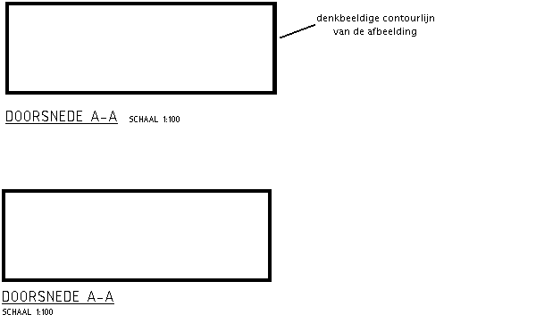

De afbeeldingen (teken-objecten) op een tekening voorzien van een onderschrift en een schaalaanduiding.
Onderschiften en schaalaanduiding zoveel mogelijk links onder het onderdeel plaatsen waarop ze betrekking hebben.
De schaalaanduiding achter of onder het onderschrift plaatsen. Indien op een tekening één schaal wordt gebruikt kan volstaan worden met de vermelding in het titelblok.
voorbeelden:
